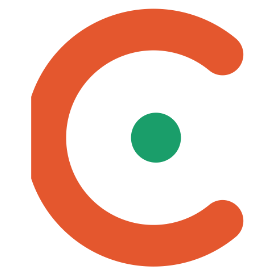

Openness
열려 있는 과학
로고의 열린 C처럼, 과학의 문은 누구에게나 열려 있어야 합니다. 전공과 직업에 관계없이 누구나 대화에 참여할 수 있습니다.
2026 Founding · 사단법인
한국과학기술문화소통학회(KCST)는 과학기술과 사회의 상호작용을 연구하고, 과학소통·교육과 전문인력 양성을 통해 국민의 과학적 소양을 높이는 학술단체입니다.
The Korean Society for the Public Communication of Science and Technology
5월 15일 총회를 거쳐 출범, 초대 회장 추대
과학문화 NGO협의회 → 한국과학문화교육단체연합(2010, 50여 개 단체)의 노하우와 네트워크 계승
PCST Network 세계대회 한국 유치 로드맵 추진
01About KCST
한국과학기술문화소통학회(KCST)는
과학기술과 사회가 서로를 더 깊이 이해하도록 돕는
과학소통 전문 학회입니다.
연구자와 과학커뮤니케이터, 연구기관과 과학관, 그리고 과학을 즐기는 시민이 한자리에 모여 “과학을 어떻게 정확하면서도 흥미롭게 전할 수 있을까”를 함께 묻고 답합니다.
2000년 과학문화 시민단체들의 연대로 시작해
2010년 한국과학문화교육단체연합으로 이어진 현장의 경험을 바탕으로, 2026년 사단법인 학회로 새롭게 출범했습니다.
Openness
로고의 열린 C처럼, 과학의 문은 누구에게나 열려 있어야 합니다. 전공과 직업에 관계없이 누구나 대화에 참여할 수 있습니다.
People
대화의 출발점은 시민입니다. 일방적인 전달보다 듣고 함께 생각하는 소통으로 과학과 사람이 함께 자라는 관계를 만듭니다.
Depth
재미있되 정확해야 합니다. 학술 연구와 전문가 검증을 바탕으로, 신뢰할 수 있는 과학소통의 기준을 세웁니다.

초대 회장
조숙경 한국에너지공과대학교(KENTECH) 교수
세계과학커뮤니케이션학회(PCST Network) 아시아인 최초 회장(2023~2025)
02Programs
학술 연구에서 현장 교육, 시민 참여와 국제 교류까지. 과학소통의 처음과 끝을 함께합니다.
01 · Annual Conference
매년 가을, 과학소통의 여러 현장이 한자리에 모입니다. 국제 학술, 연구기관, 과학관, 민간 과학문화 공간 등 분야별 세션에서 경험과 연구를 나누고, 시민 누구나 참여하는 열린 세션도 운영합니다.
02 · Fact × Impact
전공 과학자의 깊이와 커뮤니케이터의 이야기 힘을 잇습니다. 강연과 콘텐츠를 함께 검토하고 다듬어 정확하면서도 잘 전달되는 과학을 만듭니다.
03 · Education & Certification
과학소통 전문인력을 키우는 교육 과정과 인증 제도를 운영합니다. 고경력 과학기술인의 노하우가 다음 세대로 이어지도록 돕습니다.
04 · Public Dialogue
AI, 에너지, 기후, 백신, 식품처럼 삶에 닿는 과학기술 이슈를 시민·과학계·정책 현장이 함께 숙의하는 자리를 엽니다.
05 · Research & Publishing
과학소통 분야의 연구를 축적하고 전문 학술지 창간을 준비합니다. 정부·지자체·공공기관의 과학문화 정책 연구와 자문에도 참여합니다.
06 · Global Network
세계과학커뮤니케이션학회(PCST Network)의 아시아 거점으로서 한국의 과학소통을 세계에 알리고, 아시아 각국과 교류합니다.
03Roadmap
시민단체의 연대에서 시작한 KCST는 2031년 PCST Network 세계대회 한국 유치를 목표로 한 걸음씩 나아갑니다.
Phase 01
2000–2025
과학문화 시민단체들이 연대해 현장의 경험과 네트워크를 쌓아 왔습니다.
Phase 02 · Now
2026
사단법인 학회로 새롭게 출발해 첫 공식 무대를 엽니다.
창립대회
11.17 PCST Asia 국제 토론회
11.18 창립기념 심포지엄 · 총회
Phase 03
2027–2030
정기 학술대회와 학술지를 축으로 학회의 활동을 꾸준히 이어 갑니다.
Phase 04 · Goal
2031
PCST Network 세계대회를 한국에 유치해 아시아 과학소통의 중심으로 자리매김합니다.
04FAQ
더 궁금한 점은 leesh45337@gmail.com으로 문의해 주세요.
과학기술과 사회의 소통을 연구하고 실천하는 사단법인 학회입니다. 학술대회·학술지·교육·인증·공론장·국제 교류 활동으로 과학소통의 전문성을 높이고, 국민 누구나 과학을 가깝게 이해할 수 있는 환경을 만듭니다. 2026년 5월 출범했으며 초대 회장은 조숙경 교수(KENTECH)입니다.
과학기술의 지식과 쟁점을 시민과 나누고, 시민의 질문과 의견을 다시 과학계로 전하는 양방향의 활동을 말합니다. 강연·책·영상·전시는 물론, 과학기술 정책에 대한 시민 토론까지 모두 과학소통에 포함됩니다.
네. 과학커뮤니케이터, 작가와 크리에이터, 교사, 과학관과 공공기관 종사자, 과학문화 공간 운영자 등 과학소통에 관심 있는 분이라면 누구나 함께할 수 있습니다. 관련 분야 대학(원)생은 학생회원으로 가입할 수 있습니다.
입회원서를 제출하면 운영위원회 승인을 거쳐 회원이 됩니다. 회원은 정회원, 학생회원, 단체회원으로 나뉘며 정회원과 단체회원에게 총회 의결권과 선거권이 있습니다. 입회원서는 이메일로 요청해 주세요.
네. 단체회원으로 가입해 학회 활동에 참여할 수 있으며, 학술대회 공동 개최와 후원, 과학소통 관련 연구·교육 위탁도 함께 논의할 수 있습니다.
2026년 11월 17일(화)부터 18일(수)까지 열립니다. 첫날은 아시아 각국 대표가 참여하는 PCST Asia 국제 토론회, 둘째 날은 창립기념 심포지엄과 총회가 진행됩니다. 장소와 참가 신청 방법은 확정되는 대로 이 페이지에서 안내합니다.
네. 2027년부터 매년 열리는 정기 학술대회에는 회원이 아닌 시민도 무료 또는 최소 비용으로 참여할 수 있는 열린 세션이 마련됩니다.
PCST Network(Public Communication of Science and Technology)는 전 세계 과학소통 연구자와 실천가가 모인 국제 네트워크입니다. KCST는 그 아시아 거점 역할을 맡고 있으며, 2031년 PCST 세계대회를 한국에 유치하기 위한 준비를 이어 가고 있습니다.